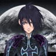

PacoChan
|  | La mente pensante tras este proyecto. Él se ha encargado de traducir los textos, editar los gráficos, la programación de diversas utilidades para editar y recomprimir los archivos más cómodamente, la programación del parcheador, revisar el juego en busca de todo tipo de posibles errores, el diseño de esta web y de escribir todo esto que estáis leyendo ahora. |
Garin
Ha contribuído al testeo y a la revisión exhaustiva del juego, en busca de posibles errores ortográficos, tipográficos o gramaticales.
Ah, y es muy simpático. |
Agradecimientos
- A soywiz por ayudar cuando se presentaron diversos problemas técnicos.
- A Charleekun, Old Warrior y a Klint por testear el juego.
- A SubDrag de Rare Witch Project, por crear el descompresor que permite extraer los archivos de diversos juegos de Rare, incluído el Banjo-Kazooie.